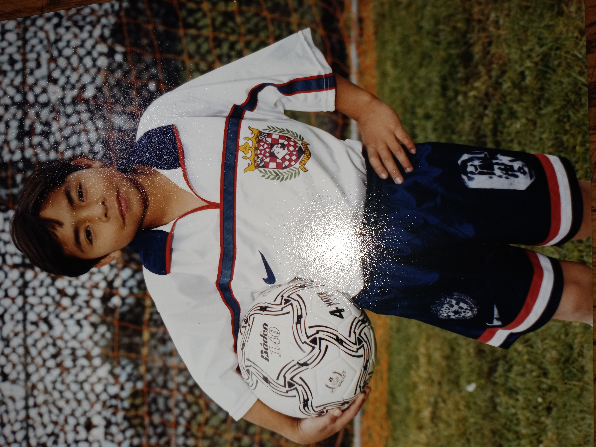
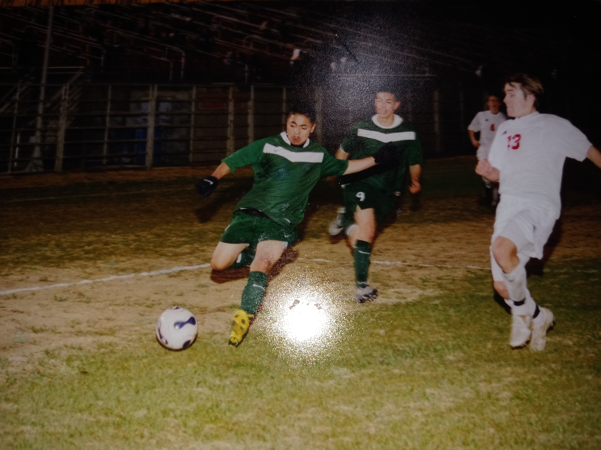
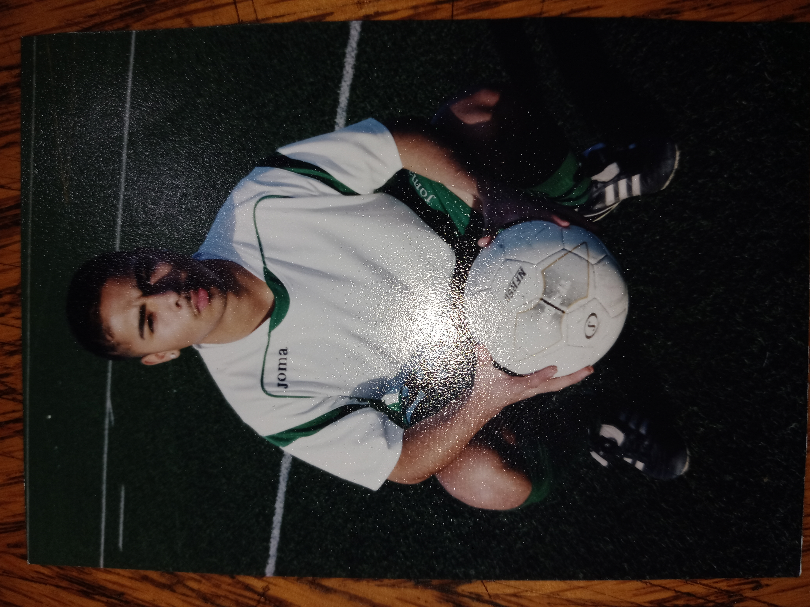
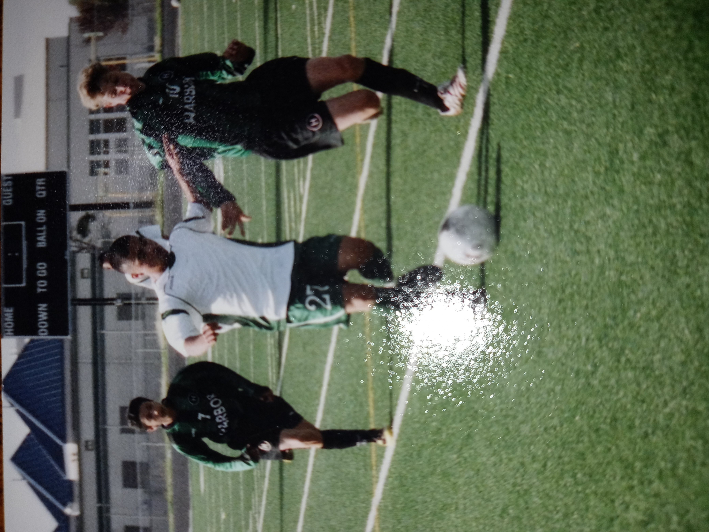
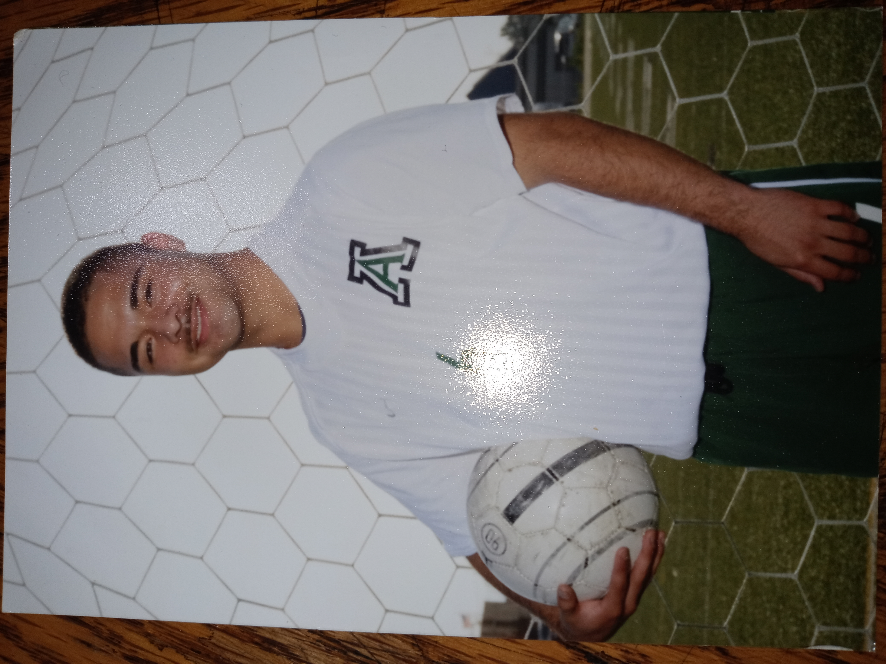

Gerardo Tapia Vera: About
Visit my YouTube channel to watch my soccer tricks and skills videos.
Some Important Soccer Photos Of Myself

Young Depo Player
As a young player with Depo.

Versus Palma
About to cross the ball into the box.

My 2nd Year In Varsity
This is my individual photo during my 2nd year in the Alisal's varsity team.

Commanding As A Right Winger
I subtituted into the game versus Harbor and commanded the midfield.

Dribbling Versus Harbor
I performed a stop and dribble move versus Harbor to move past the opponent.

I Scored The Game Winner In A CCS Playoff Game
During my 3rd year in the CCS playoffs, I started versus Menlo Atherton and scored the game winner.

This Is My Senior Photo Without My Captain Band
This is me during my senior year without my captain armband on Alisal's turf.
Previous
Next